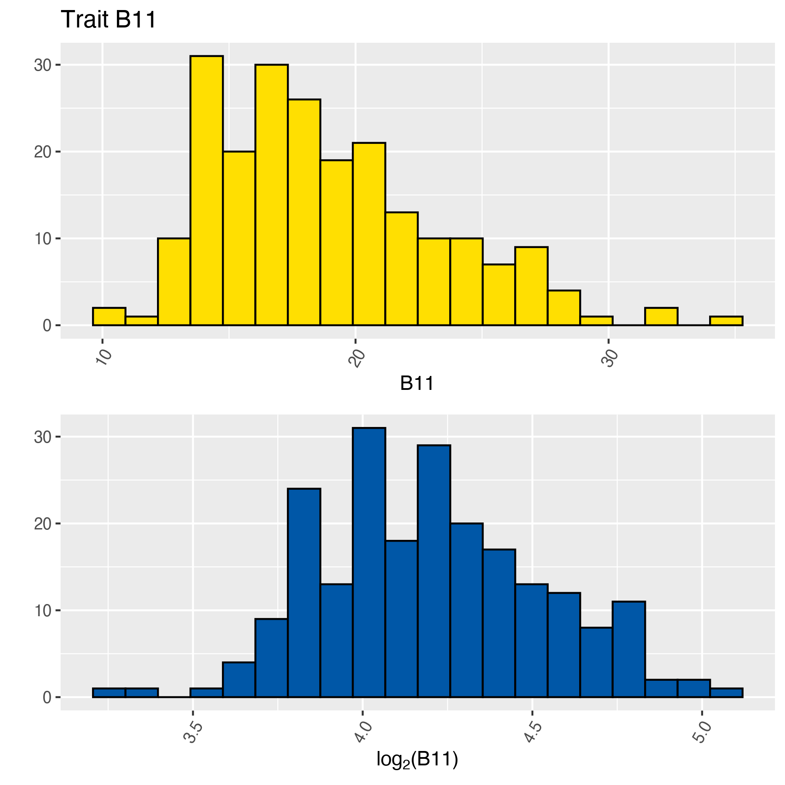
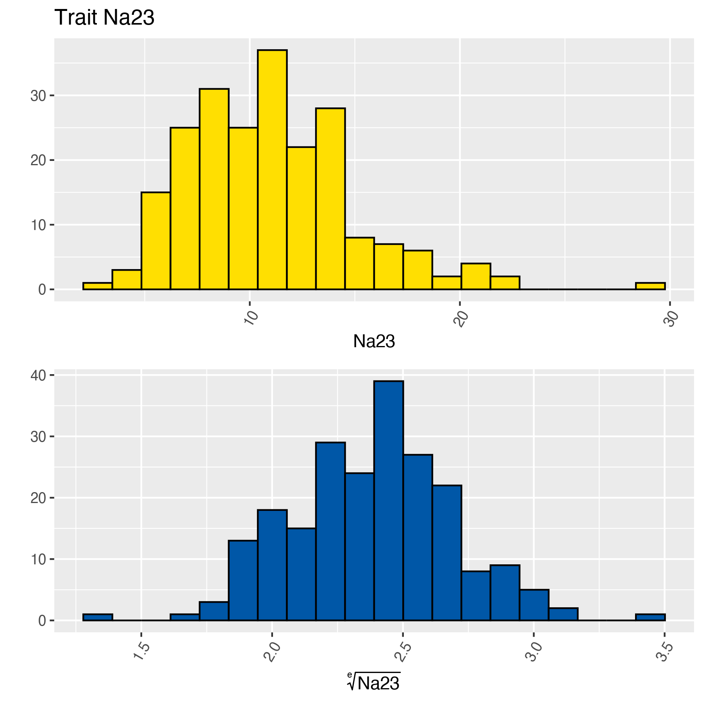

MetaPipe: A High-Performance Computing Pipeline for QTL Mapping of Large Ionomic and Metabolomic Datasets
Overview
The goal of MetaPipe is to provide an easy to use and powerful tool capable of performing QTL mapping analyses.
Installation
You can install the released version of MetaPipe from CRAN with:
install.packages("MetaPipe")And the development version from GitHub with:
# install.packages(c("hexSticker", "kableExtra", "qpdf", "remotes")
remotes::install_github("villegar/MetaPipe", build_vignettes = TRUE)Example
Load raw data
For details about the data structure and extended documentation, see the vignette Load Raw Data.
vignette("load-raw-data", package = "MetaPipe")Function call
where raw_data_filename is the filename containing the raw data, both absolute and relative paths are accepted. Next, the argument excluded_columns is a vector containing the indices of the properties, e.g. c(2, 3, ..., M).
# F1 Seedling Ionomics dataset
ionomics_path <- system.file("extdata",
"ionomics.csv",
package = "MetaPipe",
mustWork = TRUE)
ionomics <- MetaPipe::load_raw(ionomics_path)
knitr::kable(ionomics[1:5, 1:8])| ID | SampleWeight | Ca44 | K39 | P31 | Li7 | B11 | Na23 |
|---|---|---|---|---|---|---|---|
| E_199 | 79 | 32675.79 | 6051.023 | 2679.338 | 0.1159068 | 23.32975 | 9.372606 |
| E_209 | 81 | 28467.95 | 5642.651 | 2075.403 | 0.0104801 | 27.31206 | 8.787553 |
| E_035 | 81 | 27901.35 | 7357.856 | 2632.343 | 0.0561879 | 16.87480 | 14.369062 |
| E_197 | 79 | 27855.36 | 5225.275 | 1761.725 | 0.0104453 | 25.34740 | 11.009597 |
| E_016 | 79 | 27377.40 | 6141.001 | 2145.715 | 0.0172996 | 24.64500 | 6.999958 |
Replace missing data
For extended documentation, see the vignette Replace Missing Data.
vignette("replace-missing-data", package = "MetaPipe")Function call
MetaPipe::replace_missing(raw_data = example_data,
excluded_columns = c(2),
# Optional
out_prefix = "metapipe",
prop_na = 0.5,
replace_na = FALSE)where raw_data is a data frame containing the raw data, as described in Load Raw Data and excluded_columns is a vector containing the indices of the properties, e.g. c(2, 3, ..., M). The other arguments are optional, out_prefix is the prefix for output files, prop_na is the proportion of NA values (used to drop traits), and replace_na is a logical flag to indicate whether or not NAs should be replace by half of the minimum value within each variable.
# F1 Seedling Ionomics dataset
data(ionomics) # Includes some missing data
ionomics_rev <- MetaPipe::replace_missing(ionomics, c(1, 2))
ionomics_rev <- MetaPipe::replace_missing(ionomics,
excluded_columns = c(1, 2),
prop_na = 0.025)
#> The following trait was dropped because it has 2.5% or more missing values:
#> - Se78
ionomics_rev <- MetaPipe::replace_missing(ionomics,
excluded_columns = c(1, 2),
replace_na = TRUE)
knitr::kable(ionomics_rev[1:5, 1:8])| ID | SampleWeight | Ca44 | K39 | P31 | Li7 | B11 | Na23 |
|---|---|---|---|---|---|---|---|
| E_001 | 79 | 15894.22 | 5888.311 | 1743.118 | 0.0128699 | 18.66673 | 6.970224 |
| E_002 | 93 | 13155.45 | 7013.400 | 2244.684 | 0.0119316 | 14.47693 | 5.866392 |
| E_004 | 97 | 14182.51 | 7966.273 | 2311.057 | 0.0212316 | 14.71313 | 10.251955 |
| E_005 | 82 | 22550.82 | 7514.089 | 2315.675 | 0.0233063 | 20.10630 | 11.773697 |
| E_006 | 99 | 15982.76 | 7608.464 | 1995.193 | 0.0588128 | 12.97801 | 11.043837 |
Assess normality
For extended documentation, see the vignette Assess Normality.
vignette("assess-normality", package = "MetaPipe")MetaPipe assesses the normality of variables (traits) by performing a Shapiro-Wilk test on the raw data (see Load Raw Data and Replace Missing Data. Based on whether or not the data approximates a normal distribution, an array of transformations will be computed, and the normality assessed one more time.
Function call
MetaPipe::assess_normality(raw_data = raw_data,
excluded_columns = c(2, 3, ..., M),
# Optional
cpus = 1,
out_prefix = "metapipe",
plots_dir = tempdir(),
transf_vals = c(2, exp(1), 3, 4, 5, 6, 7, 8, 9, 10),
alpha = 0.05,
pareto_scaling = FALSE,
show_stats = TRUE)where raw_data is a data frame containing the raw data, as described in Load Raw Data and excluded_columns is a vector containing the indices of the properties, e.g. c(2, 3, ..., M). The other arguments are optional, cpus is the number of cores to use, in other words, the number of concurrent traits to process, out_prefix is the prefix for output files, plots_dir is the output directory where the plots will be stored, transf_vals is a vector containing the transformation values to be used when transforming the original data, alpha is the significance level for the Wilk-Shapiro tests, pareto_scaling is a boolean flag to indicate whether or not to scale the traits to the same scale, and show_stats is a boolean flag to show or hide some general statistics of the normalisation process.
# F1 Seedling Ionomics dataset
data(ionomics) # Includes some missing data
ionomics_rev <- MetaPipe::replace_missing(ionomics,
excluded_columns = c(1, 2),
replace_na = TRUE)
ionomics_normalised <-
MetaPipe::assess_normality(ionomics_rev,
excluded_columns = c(1, 2),
transf_vals = c(2, exp(1)),
out_prefix = "README-ionomics",
plots_dir = "man/figures/",
pareto_scaling = FALSE)
#> Total traits (excluding all NAs traits): 21
#> Normal traits (without transformation): 2
#> Normal traits (transformed): 4
#> Total normal traits: 6
#> Total skewed traits: 15
#>
#> Transformations summary:
#> f(x) Value # traits
#> log 2 3
#> root e 1
# Extract normalised features
ionomics_norm <- ionomics_normalised$norm
ionomics_skew <- ionomics_normalised$skewThe function call to MetaPipe::assess_normality will print a summary of the transformations performed (if any), as well as an overview of the number of traits that should be considered normal and skewed. Next, we can preview some of the partial output of the normality assessment process:
# Normal traits
knitr::kable(ionomics_norm[1:5, ]) | ID | Ca44 | B11 | Na23 | Mg26 | Rb85 | Sr88 |
|---|---|---|---|---|---|---|
| E_001 | 15894.22 | 4.222397 | 2.042740 | 10.77021 | 1.555742 | 7.347059 |
| E_002 | 13155.45 | 3.855684 | 1.917202 | 10.54095 | 2.058711 | 6.890243 |
| E_004 | 14182.51 | 3.879033 | 2.354263 | 10.51931 | 2.198422 | 9.025915 |
| E_005 | 22550.82 | 4.329576 | 2.477233 | 11.13450 | 1.791578 | 15.292360 |
| E_006 | 15982.76 | 3.697997 | 2.419593 | 11.72734 | 2.229866 | 13.901449 |
# Skewed traits (partial output)
knitr::kable(ionomics_skew[1:5, 1:8])| ID | K39 | P31 | Li7 | Al27 | S34 | Fe54 | Mn55 |
|---|---|---|---|---|---|---|---|
| E_001 | 5888.311 | 1743.118 | 0.0128699 | 3.845879 | 1152.944 | 27.59340 | 54.53991 |
| E_002 | 7013.400 | 2244.684 | 0.0119316 | 5.825639 | 1600.442 | 35.49159 | 52.57114 |
| E_004 | 7966.273 | 2311.057 | 0.0212316 | 8.036047 | 1039.098 | 39.13434 | 36.66475 |
| E_005 | 7514.089 | 2315.675 | 0.0233063 | 9.482051 | 1091.607 | 40.22041 | 43.24368 |
| E_006 | 7608.464 | 1995.193 | 0.0588128 | 29.329605 | 1096.871 | 75.23614 | 53.64705 |
Among the transformed traits, we have B11 and Na23. Both of which seem to be skewed, but after a simple transformation, can be classify as normalised traits.

QTL mapping
Scan one QTL mapping
where x_data
# F1 Seedling Ionomics dataset
data(father_riparia) # Genetic map
# Load cross file with genetic map and raw data for normal traits
x <- MetaPipe::read.cross(father_riparia,
ionomics_norm,
genotypes = c("nn", "np", "--"))
#> --Read the following data:
#> 166 individuals
#> 1115 markers
#> 7 phenotypes
#> Warning in summary.cross(cross): Some markers at the same position on chr
#> 1,4,5,7,8,9,10,12,14,15,16,17; use jittermap().
#> --Cross type: f2
set.seed(123)
x <- qtl::jittermap(x)
x <- qtl::calc.genoprob(x, step = 1, error.prob = 0.001)
x_scone <- MetaPipe::qtl_scone(x, 1, model = "normal", method = "hk")